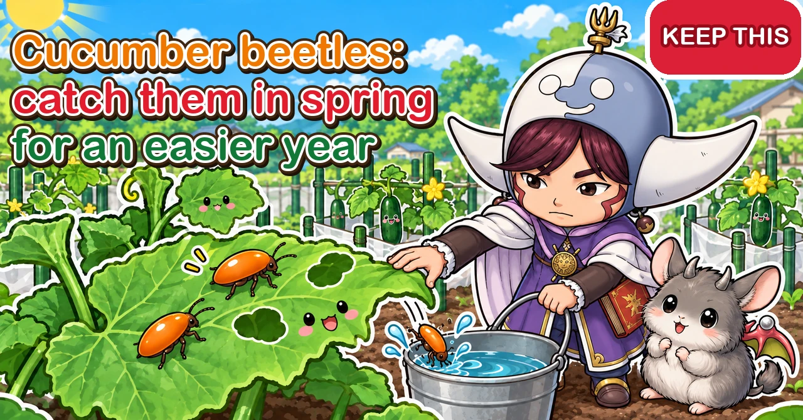

Cucumber beetles 🥒 Catch them in spring and the whole year is easier

🥒 "The day after I planted my cucumbers, the leaves were full of round holes."
🥒 "My little squash seedling turned into lace overnight."
🥒 "Something's been nibbling the skin of my cucumbers."
Hello, I'm Eiko. Eight years of growing vegetables organically and without pesticides, and a teaching licence in science.
If you've grown anything in the cucumber family, you've probably met this small orange beetle. In Japan it's called uri-hamushi, the "melon leaf beetle". The adults eat the leaves, and the grubs eat the roots underground. Often by the time you notice, the seedling's leaves are in tatters and you have to replant.
This article goes through the beetle's year, how to recognise the damage, how to protect seedlings, how to catch the adults, what to do about the grubs, what worked and what didn't, and what to watch for in containers.
Looks like: neat round holes in leaves, often chewed in a circle; seedlings' leaves turned to lace; nibbled flowers and scars on the fruit skin; plants that wilt in the midday sun and recover by evening, or wobble at the base (grubs in the soil).
Where you are: the beetle in this article (Aulacophora, known in Australia as the pumpkin beetle) lives in East Asia and the Pacific. In North America, striped and spotted cucumber beetles live much the same way — adults overwinter, attack seedlings in spring and lay eggs at the base of the plant, and the grubs feed on roots — and they can also spread bacterial wilt, so early protection matters even more. The methods here work for them too.
What to do: protect seedlings with a collar or insect netting the day you plant; in the morning or evening, knock adults into a bucket of water — especially in spring; mulch so they can't lay eggs at the base; if a plant wilts, dig at the base and look for grubs.

What this diagram says （図解の文字）
- Overwinter as adults, arrive in spring, lay eggs in the soil
- "The year": "Adults overwinter" → "They fly in in spring — catch them now and the whole year is easier" → "Eggs in the soil at the base; grubs eat the roots" → "New adults in summer" → "Off to winter quarters"
- "Damage": "Round holes in the leaves" ／ "They nibble the fruit skin too" ／ "Wilting at midday = grubs in the soil"
- "In most areas, one generation a year. A few in spring decide the summer"
① The quick version
What they look like
- A small, shiny orange beetle, under ½ in (1 cm) long
- Flies off the moment you come near
- The grubs live in the soil: pale, slender and maggot-like
Signs of damage
- Round holes in the leaves, chewed in a circle
- Seedling leaves turned to lace
- Nibbled flowers and scarred fruit skin
- Wilting at midday and recovering by evening, or a wobbly base (grubs in the soil)
Their year (a guide for most of Japan)
- Winter: adults hide in grass or under stones and boards
- Late April to May: adults wake and fly to cucumber-family plants
- June to July: eggs laid in the soil at the base of plants (peak around mid-July); grubs eat the roots
- Late July to August: new adults emerge (peak in early to mid-August)
- Late September: adults move to winter quarters
Further from the equator, or where your summers are shorter, shift these dates later; the order stays the same.
What to do
- Protect seedlings with a collar or netting as soon as you plant
- Knock beetles into a container of water morning and evening — especially the spring adults
- Mulch so they can't lay eggs in the soil at the base
- Dig round a wilting plant to check for grubs
- In early spring, check radish and other cabbage-family leaves too
② What the beetle is
An orange beetle
It's a shiny orange beetle under ½ in (1 cm) long. Under its hard wing cases it has flying wings, and it takes off the moment you approach. It's quick, and catching one by hand is surprisingly hard.
Mad about the cucumber family
As its Japanese name says, it loves cucurbit leaves:
- Cucumbers
- Squash, pumpkins and courgettes
- Watermelons and melons
- Bitter gourd, loofah, bottle gourds and so on
Perhaps it finds them by smell — even a single cucumber plant on a balcony gets visitors. In early spring, before any cucurbits are in the ground, it will eat radish and other cabbage-family leaves instead.
It chews leaves in a circle
The beetle sometimes chews a circular groove around itself on a leaf, then eats the part inside. That leaves neat round holes or round feeding marks. If you see round holes, you can fairly safely blame this beetle.
③ Recognising the damage
Leaves
- Several round holes in the leaves of newly planted seedlings
- In bad cases the leaves become lace and can't photosynthesise
- If a seedling loses all its leaves, it may not grow on and you'll need to replant
Once plants are big, losing some leaf rarely weakens them. The time to protect is when they're young seedlings.
Flowers and fruit
The beetles also nibble flowers and the skin of fruit. Scars on a cucumber's skin, as if something had crawled over it chewing, can be their work. The fruit is fine to eat; it just looks worse.
Grubs in the soil
The adults lay eggs on the soil close to the base of the plant. The grubs feed underground — fine roots first, then thicker roots and even into the stem at the base.
- The plant wilts at midday on sunny days and recovers by evening
- Press the base and it wobbles
- There are holes or brown, eaten patches on the stem at soil level
- In bad cases the plant dies
If a cucurbit in a container or grow bag suddenly wilts and starts dying back, dig into the soil at the base and look for pale, slender grubs.
Telling it from other pests
- This beetle: orange; round holes in leaves
- Aphids: clusters of tiny insects under the leaves; leaves crinkle
- Armyworms and other caterpillars: large ragged holes, droppings below
④ Their year, and why spring is the time to strike
They overwinter as adults
The beetles spend the winter as adults, hidden in groups in grass round the plot, under stones and boards, and under fallen leaves.
They fly in and lay eggs in spring
When it warms up, from late April to May here, they become active and fly to cucurbit seedlings. They feed on the leaves and, from around June, lay eggs in the soil at the base, peaking around mid-July.
Watch the radish leaves in spring
In April, on plots with no cucurbits yet, you may find them eating the leaves of radishes and other cabbage-family crops. If spring radish leaves have round holes or orange beetles, catch them there and fewer will move on to your cucurbit seedlings later.
New adults in summer
The grubs pupate in the soil and new adults start emerging from late July, peaking in early to mid-August. That's why summer cucumber and squash leaves get so ragged. In autumn the adults move off to winter quarters; in warm regions a second batch of new adults may appear in autumn.
Dry, hot years
There's an example of numbers shooting up from late June into July in a year with little rain in the early summer wet season and day after day above 86°F (30°C). Even if spring was quiet, keep patrolling into early summer.
Why striking in spring makes life easier
In most areas the beetle has only one generation a year. Every adult you see in summer hatched from an egg laid by an adult that flew in in spring.
So if you catch the spring arrivals early, fewer eggs are laid, and fewer adults appear in summer. Fewer summer adults mean fewer overwinter, and fewer fly in the next spring. Catching a handful in spring cuts the damage this year and next.

What this diagram says （図解の文字）
- Morning and evening, knock them into a bucket of water
- "They're sluggish in the morning and evening" (morning ○, midday ✕, evening ○)
- "Hold the bucket below and knock them off" ／ "They're drawn to yellow" ／ "If a plant wilts, dig at the base"
- "How to tell": "Orange with no spots = this beetle" (a ladybird has spots)
- "At midday they fly off. Catch them in the morning or evening"
⑤ Protecting seedlings
Put a collar round them as soon as you plant
After planting, surround the seedling with an empty fertiliser bag, a plastic bag with the bottom cut off, or a tube of plastic, open at the top. In Japan this is called an andon, after a paper lantern.
- Push 3–4 thin canes in round the plant and wrap the bag or plastic round them
- Make it well taller than the seedling
- Leave the top open for air and light
The beetles are said to be good at flying sideways but not at dropping straight down into a tube, so a collar keeps them away. It also shelters the plant from cold and wind. Remove it when the plant grows out of the top.
Get ready before you plant
- Make the bed and lay the mulch film
- Have canes and bags for collars ready, or netting and hoops
- Cut the weeds round the plot
- Put a bucket for water out on the plot
Finish preparing before you buy plants, so you can protect them the same day you plant.
Making a collar
- After planting, push 3–4 thin canes, 20–24 in (50–60 cm) long, into the ground round the seedling.
- Cut the bottom off an empty fertiliser bag or large plastic bag to make a tube.
- Slip the tube over the outside of the canes and bury the bottom edge slightly.
- Leave the top open for air and light.
- Fix the tube to the canes with clothes pegs or string.
On sunny days it can get too hot inside, so check the seedling isn't wilting. When the tip pokes out of the top, take the collar off.
Cover with insect netting or shade cloth
While plants are small, a tunnel of insect netting or light shade cloth stops the beetles flying in. Bury the edges so there are no gaps.
But most cucurbits need insects to carry their pollen once they flower (some cucumber varieties set fruit without pollination). When plants grow big and start flowering, take the netting off or pollinate by hand.
Choosing and checking plants
- Choose plants with dark, thick leaves and 3–4 true leaves
- Choose sturdy plants with short gaps between leaf joints
- Check under the leaves for insects and eggs when you buy
- Plant as soon as you can after buying; prepare the spot first
Sturdy plants recover more easily from a bit of nibbling.
Mulch
Mulch film round the base leaves less bare soil for the adults to lay eggs in. Fewer eggs mean less grub damage and fewer new adults in summer.
Silver mulch film may also put the beetles off a little with its reflected glare. Once the vines cover the film, though, the effect is gone — think of it as seedling-stage protection.
⑥ Catching the adults
Sluggish morning and evening
In the heat of the day the beetles are quick and take off at once. In the cool of morning and evening they're slow and easier to catch.
Knock them into a bucket of water
- Take a bucket or container of water with you.
- When you spot a beetle on a leaf, hold the container under the leaf.
- Bring the leaf close to the rim and brush the beetle off with your hand.
- Once in the water, it can't easily fly away.
Grab at them and they escape, but in the morning and evening you can knock a good number into the water just by brushing. Some people use a butterfly net. Put the catch in a bottle or bag to dispose of it.
Patrol times and steps
The slow times are roughly before 7 a.m. and after 5 p.m.
- Take a bucket of water to the plot
- Look inside the collars, on top of the leaves and round the flowers
- When you find one, hold the bucket below and brush it off
- Check for new round holes. New holes mean they're still about
- Look for wilting plants; if you find one, check the soil at the base
From late April to May, when the spring adults arrive, patrol daily if you can, and at least every 2–3 days.
A yellow trap
The beetles are drawn to yellow. Fill a yellow bucket with water, add a drop of washing-up liquid and leave it out; beetles that fly in fall in and can't get out. One grower caught a few every day this way. It won't catch them all, but it helps your patrols.

What this diagram says （図解の文字）
- Protect them the day you plant
- "Surround them with a collar" ／ "Netting while they're seedlings"
- "Mulch makes it hard for them to lay eggs" ／ "Don't rely on companion planting alone"
- "The first 3–4 weeks after planting are what count"
⑦ What worked and what didn't
One grower's results
One home gardener who tried various pesticide-free methods reported:
- Interplanting spring onions: hardly any effect on the beetles
- Interplanting shiso: no noticeable effect
- Silver mulch or silver tape: some effect, gone once the vines covered the mulch
- Diluted wood vinegar sprayed on the beetles and leaves: felt it worked
- A yellow bucket trap: caught a few every day
That's one person's plot, and results vary by place and year. But rather than counting on companion planting to keep them off, the sure way is to combine collars, netting and catching.
They have natural enemies
Birds, mantises and spiders eat these beetles too. Spraying strong chemicals everywhere reduces those predators as well. Catching by hand and protecting with netting makes a plot where natural enemies can do their work.
Rice-husk charcoal round the base
Some people say sprinkling rice-husk charcoal round the base kept the beetles away. It's a soil improver anyway, so it does no harm, but treat any effect as temporary and combine it with other methods.
Clear the weeds round the plot
The beetles overwinter in rough grass round the plot and fly in from there in spring. Tidying weeds round the beds and the edge of the plot cuts the numbers that arrive. Early-spring weeding is beetle control too.
Varieties differ
Cucumbers planted in the same plot at the same time can suffer very differently depending on variety. The beetles seem to gather on varieties with softer leaves. If some plants attract more, patrol those first — less effort for a bigger catch. If one variety suffers badly every year, try another next year.
⑧ Dealing with the grubs
Dig round wilting plants
If a plant wilts at midday on sunny days and recovers by evening, or wobbles at the base, dig a little soil away and look at the roots and the base of the stem. Remove any pale, slender grubs.
Recognising the grubs
The grubs are pale, slender and maggot-like, with a slightly coloured head end. They're inside the stem at the base or in the soil round the roots. Chafer grubs, which also live in soil, are white, fat and curled into a C, so the shape tells them apart. Both eat roots, so remove any you find.
Rescuing a nibbled seedling
Even if a seedling's leaves are eaten, it can recover if the growing tip is unharmed and puts out new leaves.
- Remove the beetles and protect the plant with a collar or netting so it isn't eaten further
- Prioritise protecting the new leaves
- Don't rush to feed a seedling that hasn't rooted in yet
- If the growing tip has been eaten, or there are hardly any leaves left, think about replanting
A plant whose roots or stem base have been badly eaten rarely recovers; replanting is often quicker. When you replant, remove the grubs from the soil first, then lay mulch and plant.
Take extra care in containers and grow bags
With so little soil, cucurbits in containers wilt and die quickly if grubs eat the roots. Covering the soil surface at the base with fleece makes egg-laying harder. If a plant starts to wilt, dig and check early.
⑨ How long to protect each crop
- Cucumbers: collar or netting from planting until the vines run and flowers start
- Squash and courgettes: from planting until the leaves spread wide; if sown direct, net before they come up
- Watermelons and melons: from planting until the vines start to run. Melons are hit hard by even small leaf losses, so take extra care
- Cucumbers planted in summer: net at once — they coincide with the new summer adults
For all of them, the first 3–4 weeks after planting are the time to protect most carefully.
⑩ Direct sowing, summer planting and after the covers come off
Sowing direct
If you sow squash or cucumber seed straight into the ground, tiny seedlings that lose their seed leaves may not grow on.
- Cover with fleece or insect netting as soon as you sow
- Keep it on until the true leaves are growing
- Check morning and evening that no beetles are inside
- If you're worried, raise plants in pots and plant them out
Cucumbers planted in summer
Some gardeners plant a second batch of cucumbers in summer, as the spring plants tire, to keep picking into autumn. The thing to watch is the new summer adults.
- Protect summer plantings even more carefully than spring ones; net them as soon as you plant
- If young, soft-leaved plants are eaten, their growth is set back badly
- If the first cucumbers have lots of beetles, plant the new ones a little distance away
- Keep up morning and evening patrols as in spring
After the collars and netting come off
- Keep patrolling morning and evening, especially from late July when new adults build up
- If the plants are big and lush, don't fret over some leaf loss
- Check round the fruit as you pick, so the skin doesn't get nibbled
- Where bare soil shows at the base, add straw or mulch to discourage egg-laying
⑪ Containers and balconies
With only a few plants in containers, damage to each stands out.
- After planting, cover the whole container with netting
- Cover the soil at the base with fleece, mulch or straw
- Patrol morning and evening; check leaf tops and round the flowers
- If a plant suddenly wilts, dig at the base for grubs
- Sieve used compost to remove grubs and pupae before reusing it
⑫ Clearing up, and keeping notes
When you clear the plants
When the cucurbits finish, dig a little at the base as you pull them and remove any grubs or pupae.
- Don't leave pulled plants lying on the plot
- Scrape lightly through the soil at the base with a trowel
- Tidy rough grass and piles of stones or boards that could be winter quarters
Doing this in autumn means fewer beetles fly in next spring.
Keep notes
Jot down the date you first saw them, when they were most numerous, which varieties suffered most, and which methods seemed to work. Read it back before planting next year and you'll know when to start protecting and which varieties to choose.
Where to put your effort first
- Collar or net the plants as soon as you plant (works best)
- Catch the spring adults morning and evening (eases this year and next)
- Mulch to discourage egg-laying at the base
- Dig round wilting plants to check
- Yellow traps, charcoal and the like if you have time
⑬ Through the year (a guide for most of Japan)
- February–March: tidy rough grass and the undersides of stones and boards round the plot
- April–May: collar or net cucurbit seedlings as soon as you plant; lay mulch; catch arriving adults morning and evening (the most important time)
- June–July: egg-laying at the base. Dig round wilting plants; keep patrolling for adults
- Late July–August: new adults build up. Morning and evening patrols and yellow traps; watch for nibbled fruit skin
- September–October: clear the cucurbits; look for grubs and pupae at the base; tidy rough grass where they'd overwinter
⑭ Crop by crop
Cucumbers
Newly planted seedlings are a favourite. Collar them and patrol morning and evening. In summer they nibble the fruit skin too, so use picking time as a patrol.
Trailing cucumbers
Cucumbers left to trail on the ground rather than climb are often planted in summer, so the young, soft plants meet the new summer adults. Net them as soon as you plant and don't miss a patrol.
Squash and courgettes
Sown direct, the tiny seedlings can lose their leaves and fail. Raise them in pots and plant out, or net the direct sowing.
Watermelons and melons
Protect seedlings with collars or netting. In containers and grow bags, watch for grubs too. When a beetle feeds on a melon leaf it can eat away half the thickness and leave a thin skin, which quickly dies and becomes a hole. Melons suffer a lot from losing leaf, so protect them from the start more carefully than other cucurbits.
Loofah, bottle gourds and bitter gourd
Grown as a green screen or otherwise, these are cucurbits too and attract the beetles. Collar the seedlings and catch beetles morning and evening once the leaves fill out. Bitter gourd grows so lush that damage often doesn't amount to much, but still protect the seedlings.
⑮ Where growers disagree, and common mistakes
Does companion planting work? Some say interplanting spring onions keeps the beetles away; others who tried it felt hardly any effect. Interplanting has other purposes, such as reducing disease, so for these beetles, rely mainly on collars, netting and catching.
How long should netting stay on? The usual approach is to net seedlings and remove it when flowering starts. Cucumber varieties that set fruit without pollination will crop under netting, but big plants won't fit under it.
How many should I catch in spring? No need for a target. Catch what you find on each spring patrol. Keeping that up is enough to bring summer numbers down.
Common mistakes:
- Planting and leaving the seedlings uncovered — they can be eaten the very next day. Collar or net them at once
- Trying to catch them at midday — they escape. Knock them into water in the slow hours
- Letting a few spring beetles go — the summer horde hatches from their eggs. Catch them in spring
- Watering a wilting plant again and again — if grubs are eating the roots, water won't revive it. Dig and check
- Sowing squash direct and losing the seedlings — net the sowing, or raise plants in pots
⑯ Questions people ask
There are round holes but I can't see any beetles. They fly off the moment someone approaches, so you may not see them at midday. Look again before 7 a.m. or after 5 p.m. New holes mean they're nearby.
There was a hole at the base of a wilted cucumber. It may be where a grub bored in. Dig at the base and look for pale, slender grubs. If the stem is badly damaged it rarely recovers; consider replanting.
I mistook them for ladybirds and left them. These beetles are plain orange all over with no black spots. Most ladybirds are round with spots or markings. A slightly elongated orange beetle with no spots is this one.
I saw none in spring, then suddenly lots in summer. New summer adults can fly in from round about even if spring was quiet. Or spring beetles may have come unnoticed and laid eggs at the base. Next year, look carefully for round holes and grubs in spring, and knock summer adults into water morning and evening to bring numbers down.
Can I eat nibbled cucumbers? If it's only surface scarring, yes. Peel the marked part if it bothers you.
Do they come to balconies? Yes — they find cucurbits by smell, even a single plant. Net the whole container while plants are young.
Do they bite? No. They don't bite or sting people; it's fine to brush them off by hand.
They seem to fly in from neighbouring plots. They do move about by air. You may not keep them all out, but protecting seedlings and catching arrivals still cuts the damage.
Can I use yellow sticky traps? The beetles are attracted to them, but so are natural enemies and other useful insects. If you use them, put just a few near the seedlings for a short time.
Can I stop them completely without pesticides? No — they fly in. The goals are to save the seedlings' leaves, and to cut the spring adults so summer numbers don't build. Once plants are big, they keep cropping despite some leaf loss.
Won't netting stop squash being pollinated? Squash needs insects to carry pollen. Keep netting on through flowering and fruit set suffers. Take it off when flowers start, or pick a male flower in the morning and dab its pollen onto the female flowers.
Should I stop growing cucurbits if there are lots of beetles? No need. Protect the seedlings well and keep catching the spring adults, and you can still grow them. If they're bad every year, grow a few fewer plants and spend the time on patrols, or plant them together in one spot so they're easier to protect.
Lots come every year. There may be rough grass or piles of stones or boards nearby where they overwinter. Tidy those over winter and catch the spring adults thoroughly, and keep it up for a few years.
Science bit: six whys 🔬
Why chew the leaf in a circle? Cucurbit leaves defend themselves with bitter compounds and a sticky sap that flows to a wound. The beetle is thought to chew a circular groove first to cut off the flow, then eat the part inside. The round mark is how it gets past the plant's defences.
Why only one generation a year? Adults that wake in spring lay eggs; their offspring become adults in summer and go straight into winter. In most areas, summer adults don't lay a second batch the same year. With only one turn of the cycle a year, numbers grow slowly compared with insects that breed several times — which is why cutting them back in spring has such a big effect.
Why are seedlings targeted? Young leaves are soft and easy to eat. And with so few leaves, the same number of holes takes a much bigger share of the plant. Once a plant is big, it has enough leaves to keep photosynthesising despite some loss. That's why seedling protection matters.
Why lay eggs at the base? The grubs feed on cucurbit roots. Eggs laid near the base let newly hatched grubs reach roots straight away. Mulch reduces eggs because it covers exactly that spot.
Why are they slow in the morning and evening? Insects take their body temperature from their surroundings. When it's cool, their bodies aren't warmed up, so they move slowly and can't take off at once. As the sun climbs and it warms up, so do they. Hence "catch them morning and evening".
Why are they drawn to yellow? Many insects are thought to read yellow as the colour of flowers and young leaves — a sign of food. These beetles are drawn to yellow things too, and yellow traps use that habit.
To sum up
- ✅ An orange beetle that chews round holes in cucurbit leaves, and nibbles flowers and fruit skin
- ✅ Overwinters as an adult and flies in from late April–May; lays eggs in the soil at the base, and the grubs eat roots
- ✅ One generation a year in most areas. Cut the spring adults and this summer and next year are easier
- ✅ Collar or net seedlings as soon as you plant. Mulch to discourage egg-laying
- ✅ In the slow morning and evening hours, knock them into a container of water
- ✅ Yellow traps and silver mulch help, but won't stop them on their own
- ✅ If a plant wilts at midday and recovers by evening, dig at the base for grubs
- ✅ Don't rely on companion planting alone; varieties differ in how much they suffer
- ✅ The first 3–4 weeks after planting matter most. Cover direct sowings before they come up
- ✅ Check the soil at the base when clearing, and tidy winter hiding places for an easier next year
This is a pest where the earlier you act, the easier the whole year gets. Protect the seedlings, catch the spring adults, and look after the soil at the base — keep those three going every year and the beetles on your plot will dwindle bit by bit. Next time you plant cucurbits, get the collar bags and canes, and a bucket of water, ready alongside the plants 🥒
Thank you for reading!